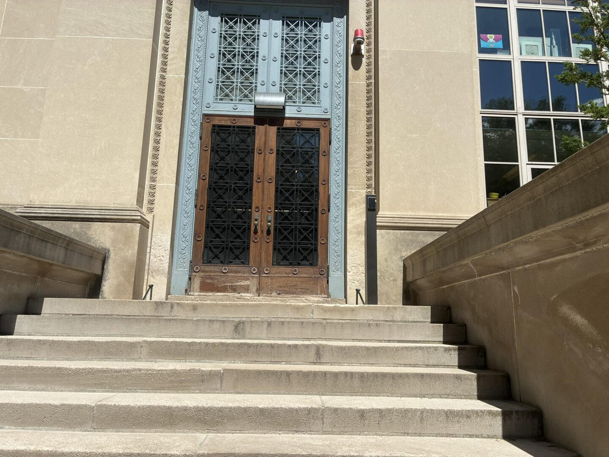
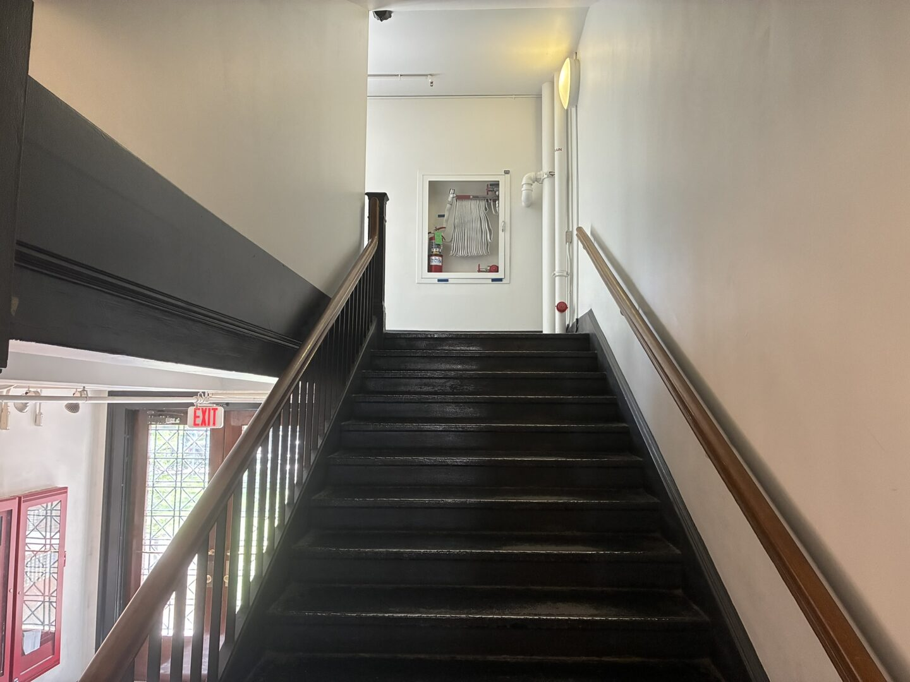
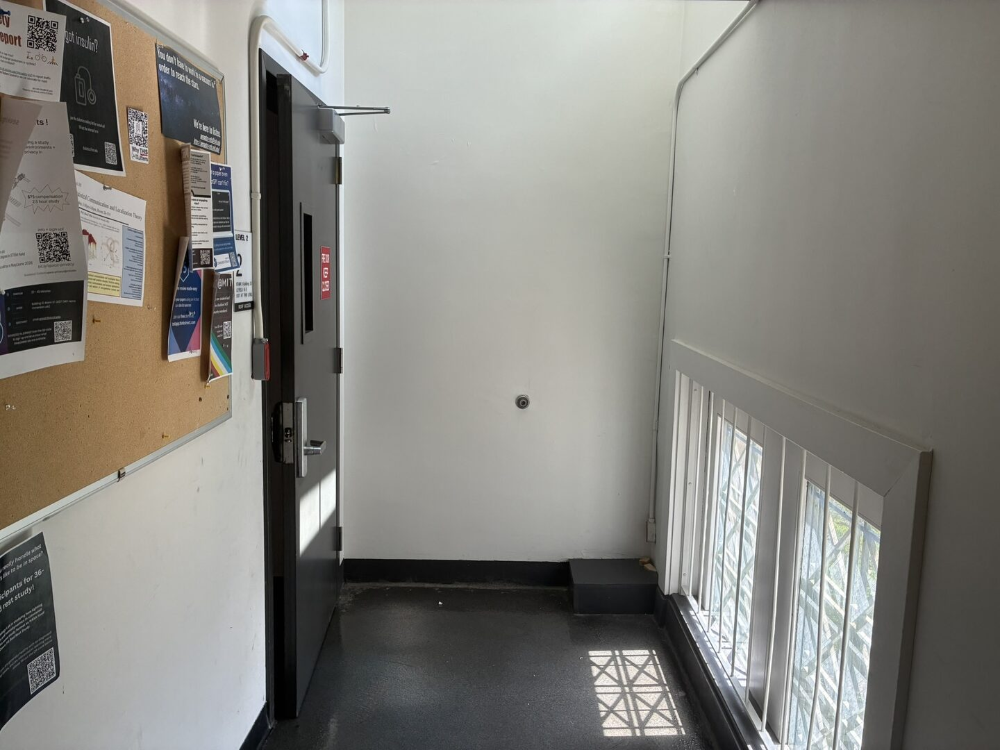
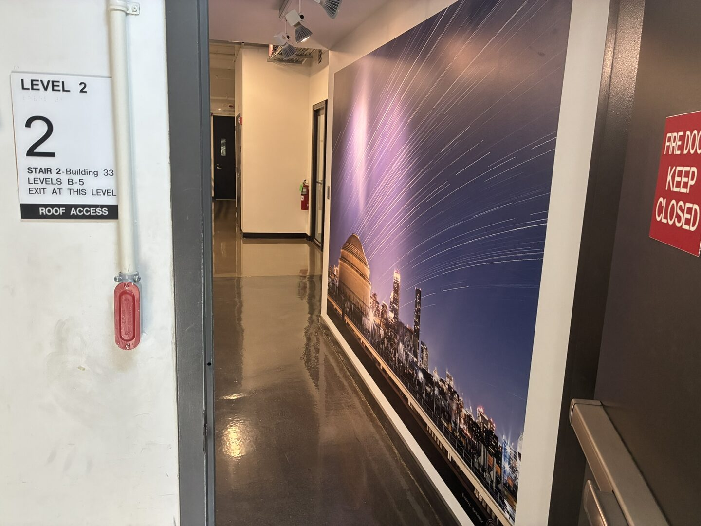
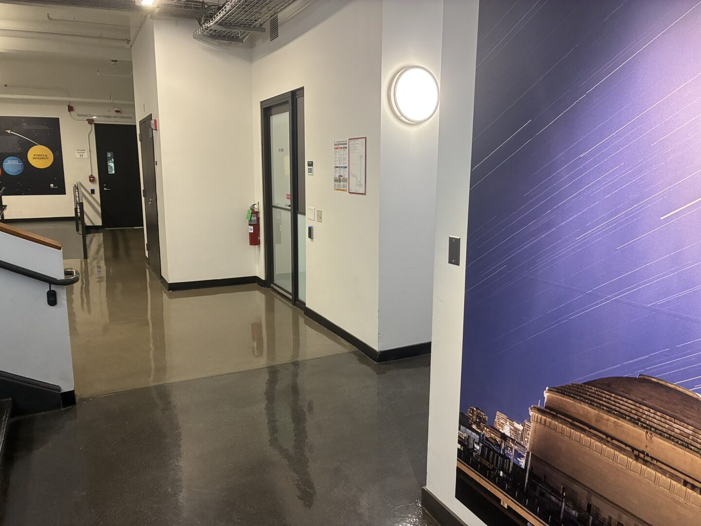
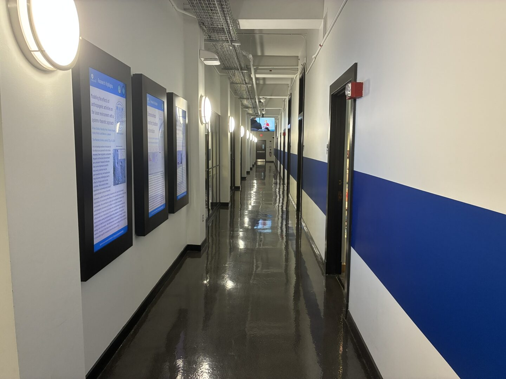
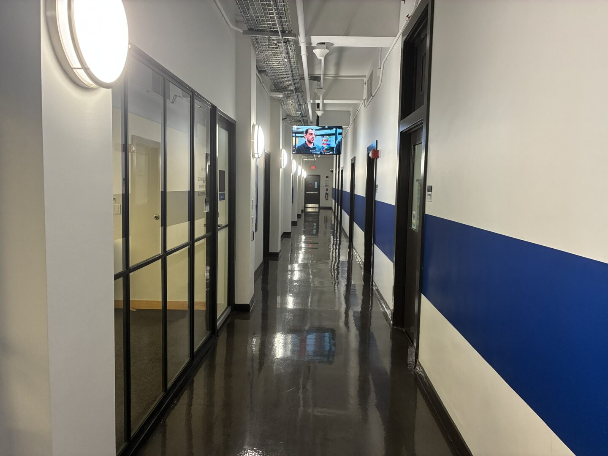

02
Door to door, in photos
From the pin above to the conference room, step by step. The last frame is the door — Room 33-218.
-

01Start outside Building 33. You're at the pin, on the lawn in front of the AeroAstro building. Head toward the stone facade. -

02Walk up to the main entrance. Make for the central doors at the top of the steps. -

03Go in through the front doors. Through the tall ornate doors and into the lobby. -

04Cross the lobby. Pass the sky mural and head for the stairwell (Stair 2) on your right. -

05Start up the stairs. Take Stair 2 up toward Level 2. -

06Keep climbing. Up the next flight. -

07One more flight. Almost at the top. -

08Step out at the landing. Leave the stairwell at the top. -

09Follow the hallway. Past the windows, straight ahead. -

10You're on Level 2. The marker confirms Building 33, Stair 2, Level 2. Keep going. -

11Into the corridor. Continue along, purple wall on your right. -

12Down the long hallway. Follow the blue stripe on the wall. -

13Almost there. The door is just ahead. -

14Room 33-218 — you made it. Department of Aeronautics & Astronautics. This is the conference room. See you inside.